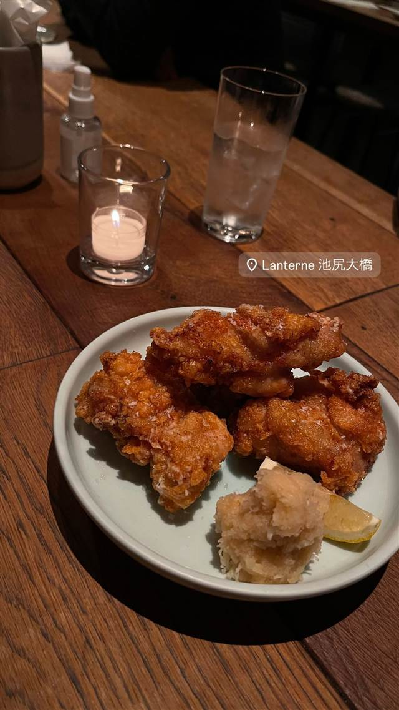
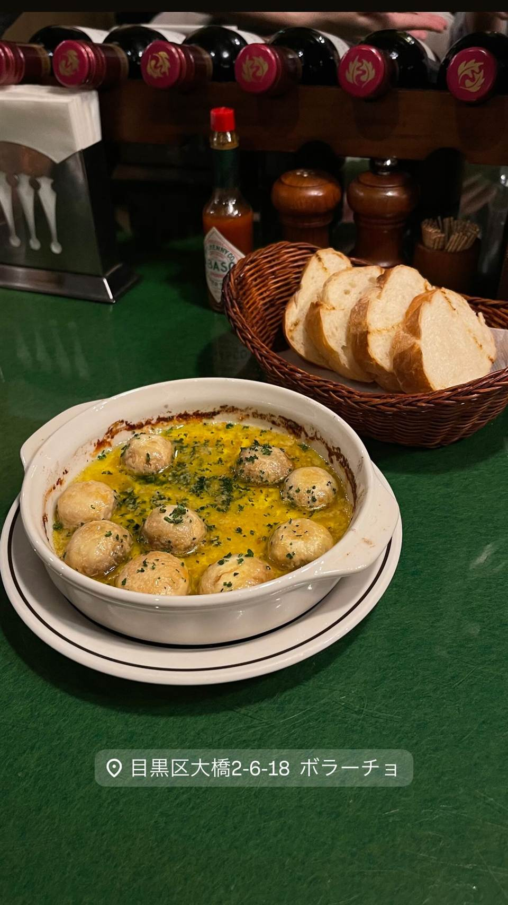
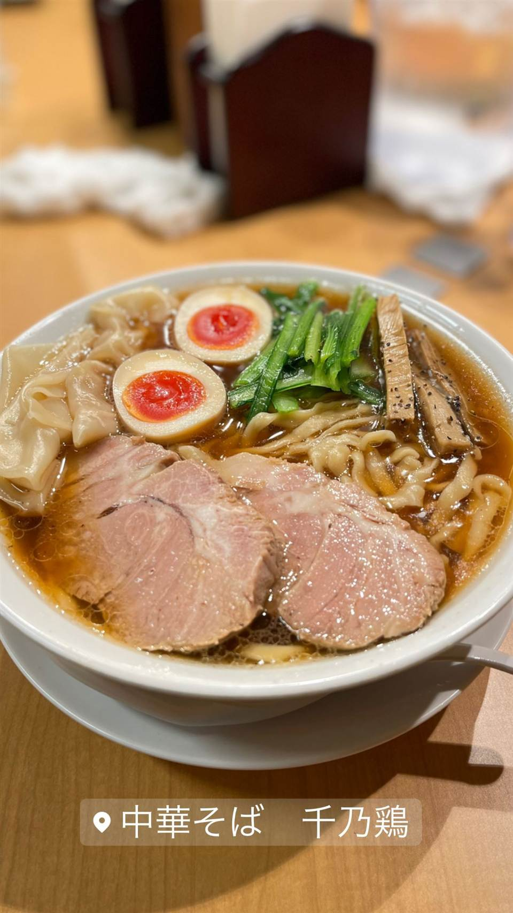
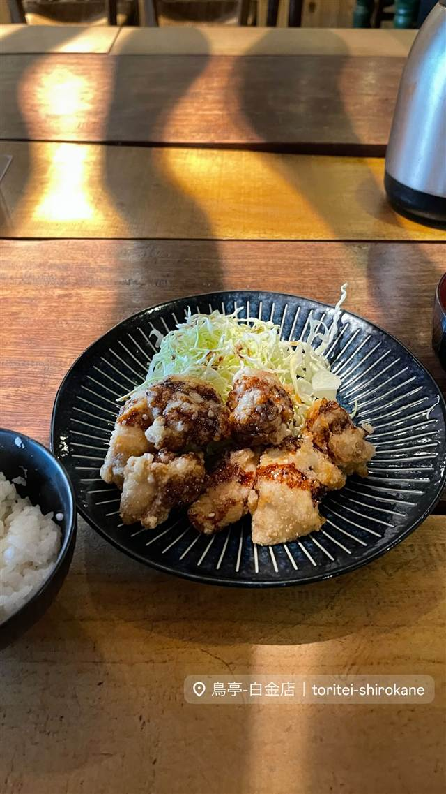

LANTERNE 池尻大橋(ランタン池尻大橋店)
秘伝のタレに漬け二度揚げする、フレンチシェフが手がける骨なし唐揚げ
Lanterne 池尻大橋
フレンチビストロなどを手がける経営者が「フレンチ版の大衆居酒屋」として展開する唐揚げ居酒屋。秘伝のタレに漬け込み二度揚げした骨なし唐揚げが名物で、代々木上原に続く2号店として池尻大橋に出店した。
TRIVIA
豆知識
- フレンチシェフが手がける「フレンチ版の大衆居酒屋」がコンセプト
- 代々木上原の1号店に続く2号店として池尻大橋に出店
REVIEWS
世間の評判
3.45食べログ
ジューシーな唐揚げと狭い座席
- ジューシーで味付けのしっかりした唐揚げを名物として評価する声が多い
- レーズンバターなど看板のおばんざいが美味しいと評価する声も多い
- 背もたれのない丸椅子で隣の席との間隔が狭く感じるという指摘がある
- 1時間半で退店が求められドリンクも2杯以上の注文が必須という声もある
食べログ 口コミ371件
| 系譜 | フレンチビストロ「MAISON CINQUANTECINQ」やレストラン＆ギャラリー「AELU」を手がける運営会社（シェルシュ）が展開する唐揚げ居酒屋の2号店（1号店は代々木上原） |
|---|---|
| 看板 | 骨なし唐揚げ（もも肉を秘伝のタレに漬け二度揚げ） |
| こだわり | 大ぶりにカットした鶏もも肉を秘伝のタレに漬け込み、二度揚げすることで外はカリッと中はジューシーに仕上げる |
| どこから | 23区の外れ・近郊 |
| 営業時間 | 月〜日 17:00-23:00 |
| 予算 | 夜 ¥4,000～¥4,999 |
| 場所 | 池尻大橋 東京都世田谷区池尻 |
| メモ | ハッピーアワーあり（一部メニュー100円）。池尻大橋駅近く |
食べたもの：唐揚げ
OFFICIAL
店からの知らせ
その日の限定や臨時の休みは、店のInstagramに出ます。
NEARBY
近い店・同じ系統の店
-

★ スペイン料理 池尻大橋 ボラーチョ 店名は「酔っぱらい」の意味、深夜3時までタンシチューが楽しめる 夜 ¥5,000～¥5,999 -
 ★
醤油・中華そば 池尻大橋駅
八雲（やくも）
骨を一切使わないのに深いコクの特製ワンタン麺
昼 ¥501～¥1,000 夜 ¥501～¥1,000
★
醤油・中華そば 池尻大橋駅
八雲（やくも）
骨を一切使わないのに深いコクの特製ワンタン麺
昼 ¥501～¥1,000 夜 ¥501～¥1,000
-

★ 醤油・中華そば 池尻大橋駅 中華そば 千乃鶏 下北沢「千里眼」の系譜、夜限定の釜玉油そばも人気 昼 ¥1,000～¥1,999 夜 ¥1,000～¥1,999 -
 コーヒー 中目黒・池尻大橋
スターバックス リザーブ ロースタリー東京
世界5番目・北米外初の旗艦店で隈研吾設計の17m銅製焙煎機がある
昼 ¥1,000～¥1,999 夜 ¥1,000～¥1,999
コーヒー 中目黒・池尻大橋
スターバックス リザーブ ロースタリー東京
世界5番目・北米外初の旗艦店で隈研吾設計の17m銅製焙煎機がある
昼 ¥1,000～¥1,999 夜 ¥1,000～¥1,999
-

から揚げ 白金高輪駅 地鶏炭火焼 鳥亭 白金店 熊本発、備長炭で焼く親鳥もも肉と9種の味から選べる唐揚げ 夜 ¥3,000～¥3,999 -
 から揚げ 恵比寿駅
家庭料理屋さん ちゃりん
手作り・無添加にこだわる、恵比寿の家庭料理と唐揚げ
から揚げ 恵比寿駅
家庭料理屋さん ちゃりん
手作り・無添加にこだわる、恵比寿の家庭料理と唐揚げ
ONSEN & SAUNA